IAN TYSON :: PORTFOLIO
ABOUT MY WORK:
I create art that elicits feelings of nostalgia while also looking towards the future. To achieve this, I tend to incorporate retro visuals and music into my pieces - typically from the the late 80's to the early 2000's. Additionally, I enjoy exploring religious concepts as well as tranquility and escapism. My interests as an artist lie in the digital field: 3-D modeling, game art and development, and overall cinematic experiences. Inspirations for my artwork come from my own childhood and my passion for science fiction and technology. My recent work has been largely inspired by Vaporwave: a genre that focuses on 80's and 90's imagery and sound.
INFINILITHS
description
Disintegrate
description
SH4M4N
The clashing of the natural and artificial is the main focus for the piece. I wanted to tackle the question: "What is it to be alive?" since it is an issue we are beginning to face as a society.


DIGITAL MONUMENTS
This series of illustrations depict scenery from videogames I find influential. These games stand as monuments for what I hope to build in my future career in game art/design.
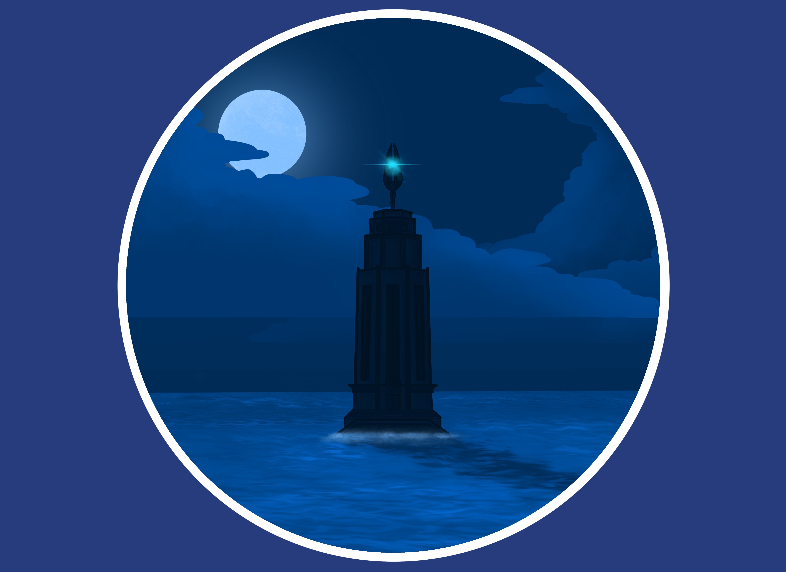
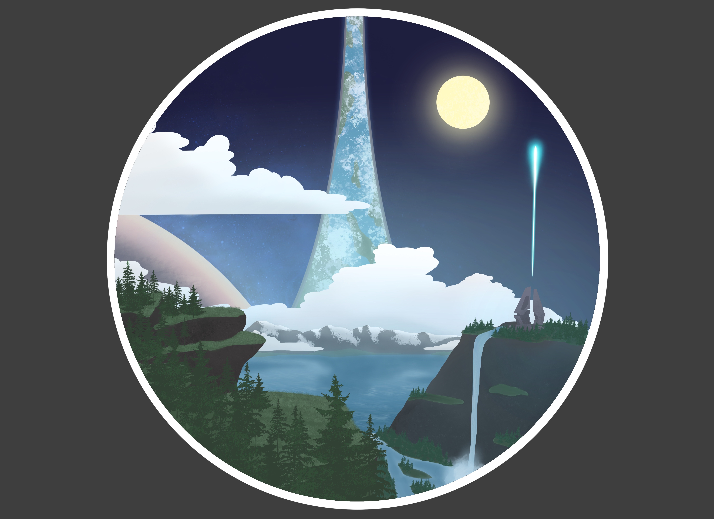
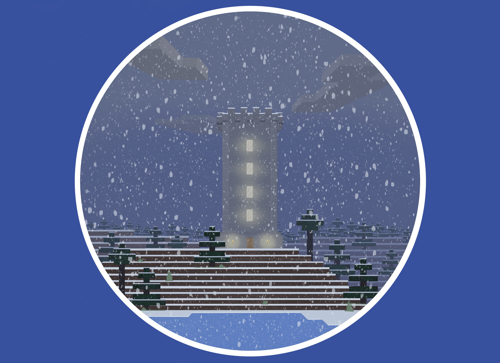
LIFE.LOVE
In this piece, I explore themes of reality, love, and idealization. By combining grids and pixelization with classical sculpture and roses, I discuss a clashing of worlds.

TOTEM
Inspired by native american totem poles and their storytelling, I created my own totems from a futuristic neon world. Each totem tells a visual story of a certain word I find interesting.
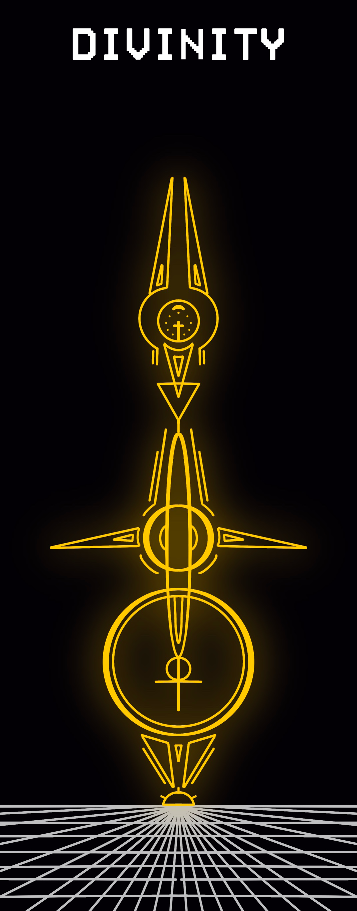 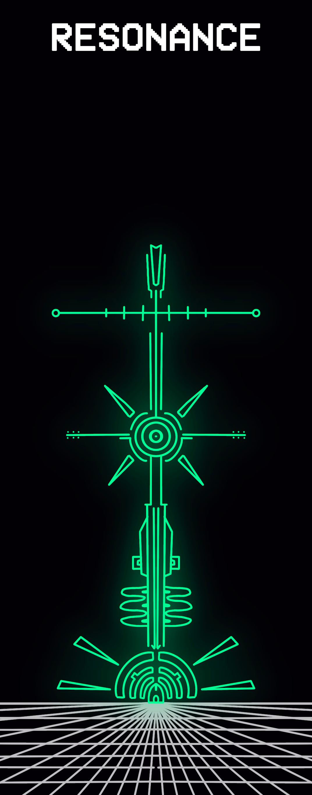 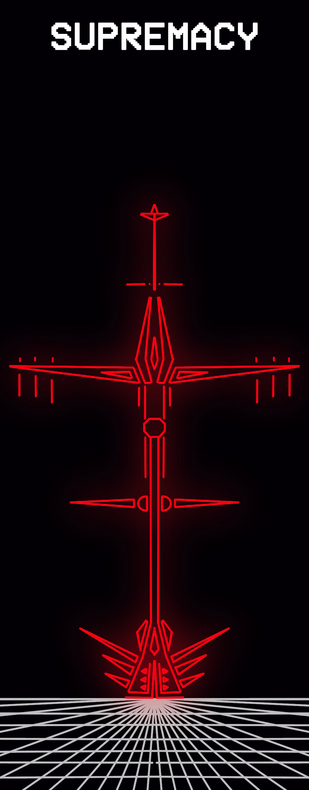 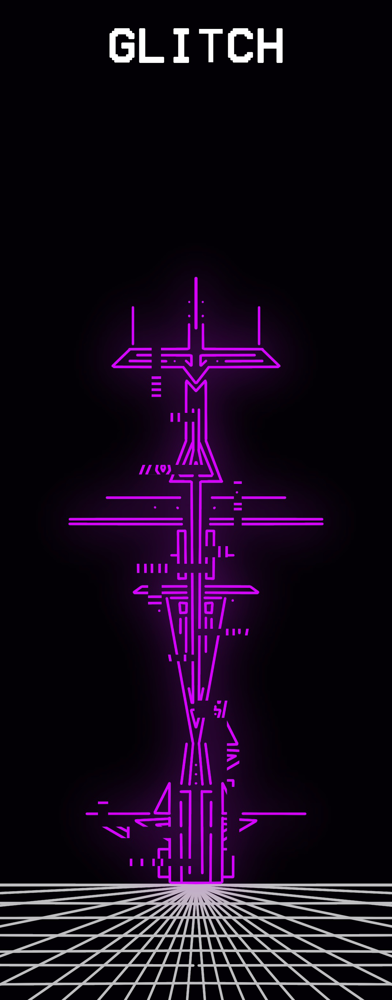
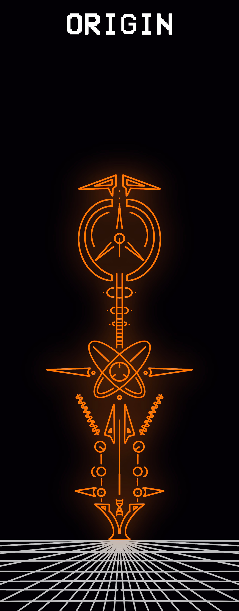 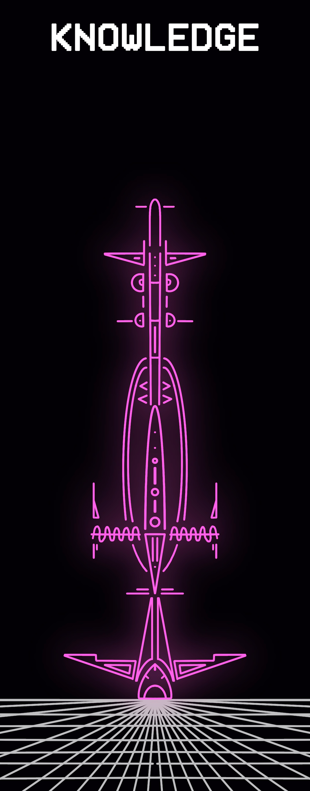 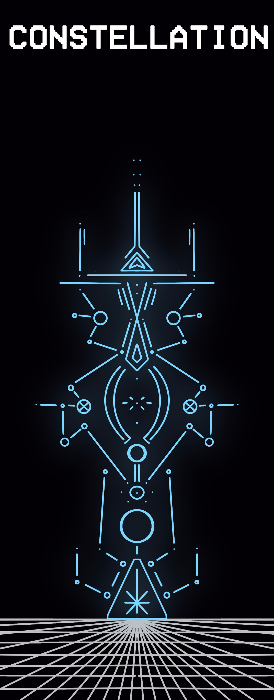 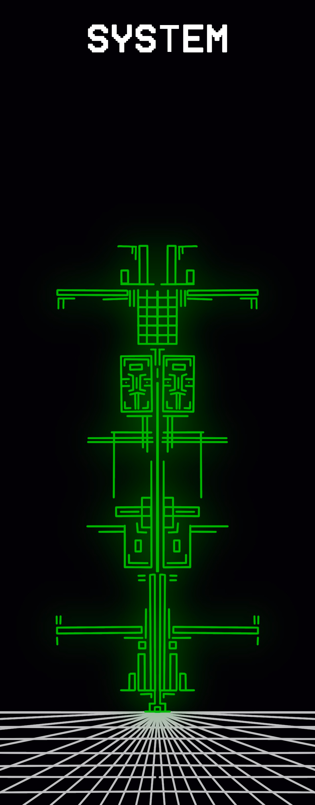
CONTEMPLATION
Using distorted footage from Minecraft, I set out to create a sense of escapism. A world is created that allows the viewer to achieve self contemplation/meditation. This video would be projected at the end of a dark hallway.
MEMORIES
This piece discusses both my personal journey through life as well as discussing the fading of memories. Like that of a computer, overtime our memories are lost or become corrupted.
DELTA V
Using footage from vintage space documentaries, I explore the geometry and physics behind space travel.
ENTANGLED
This shot focuses on the intricate work of a spiders web and how light creates a sense of clarity and sharpness.

MIDNIGHT_MUSE
Inspired by the colors of 80's disco, these photographs feature a balance between neon light and the surrounding darkness.
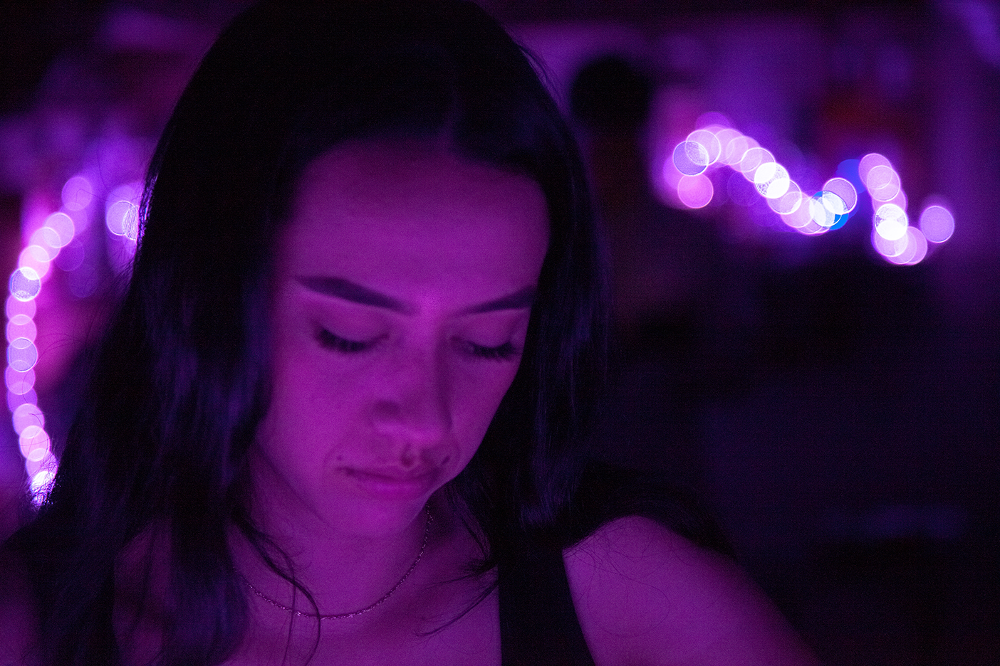
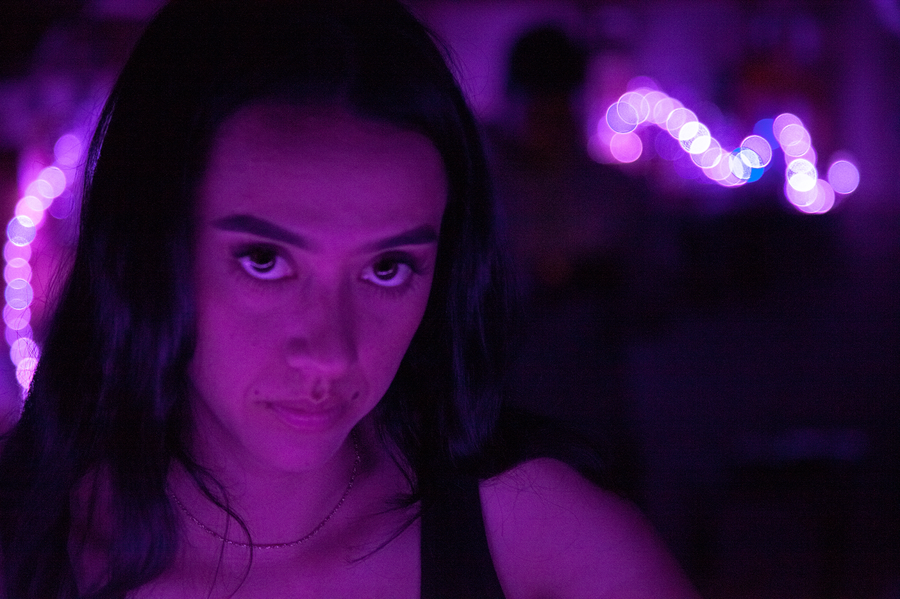
NEW GODS
Based on articles about artificial intelligence, I visually describe a potential future where AI becomes the newest deity of our lives.
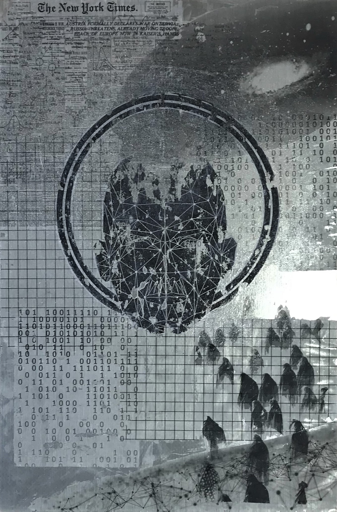
INFESTATION
Exploring concepts of multiplicity, I created this piece to mimic the spread of fungus (or infection). Over the course of a week, I continuously added fungi until it was covering a section of land.